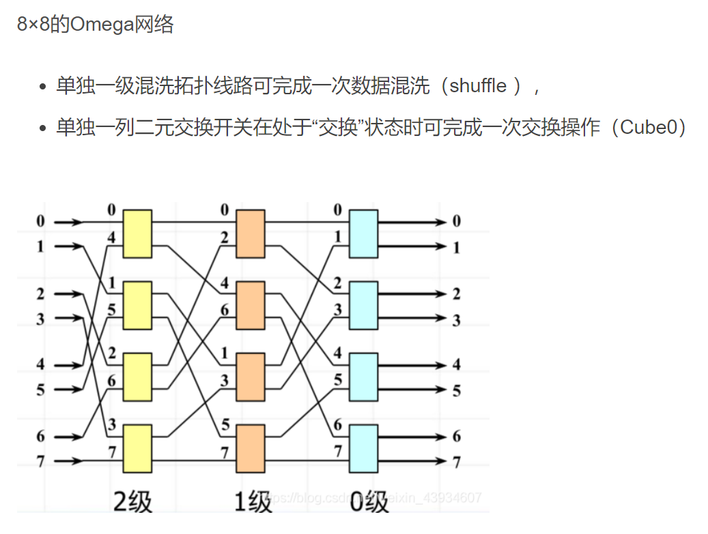
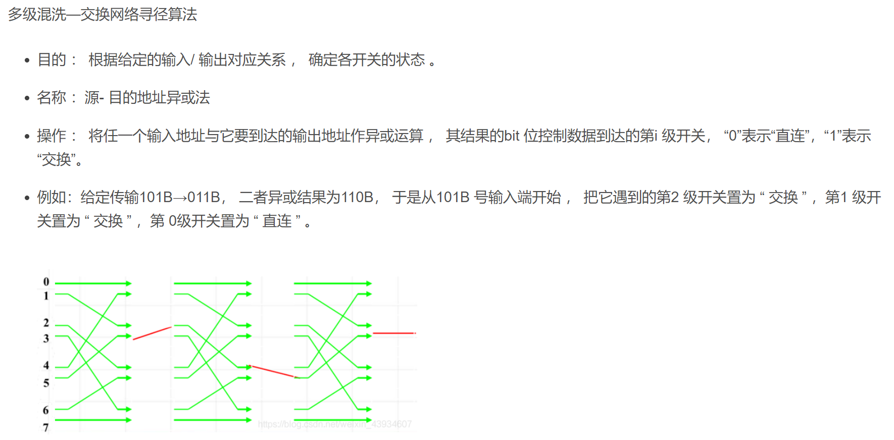
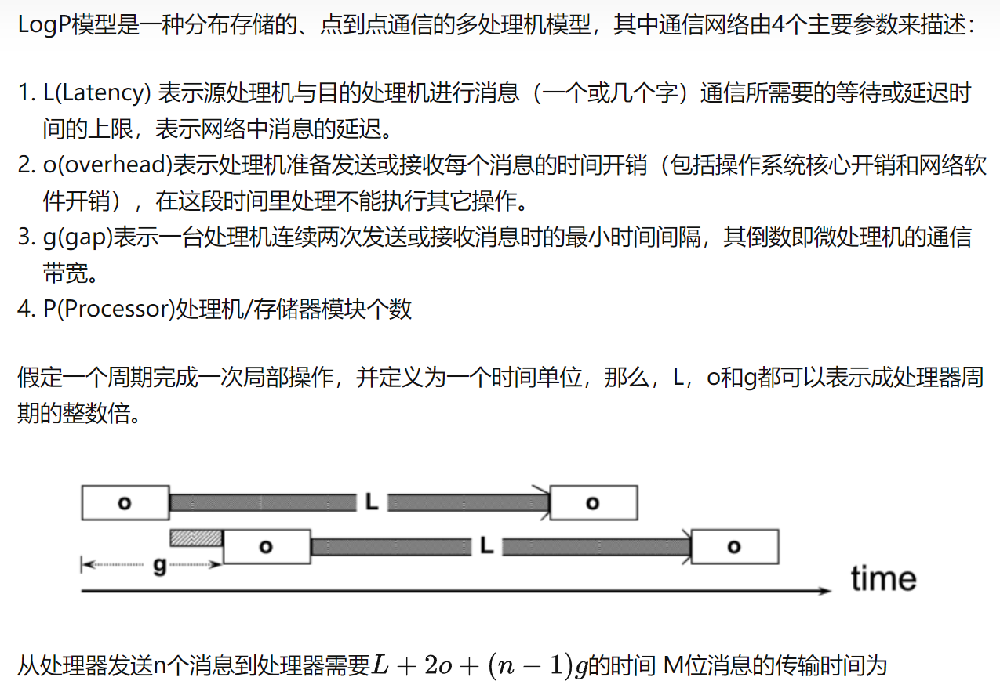
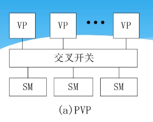
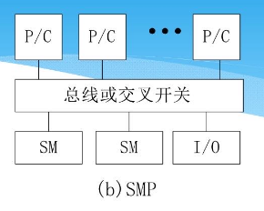
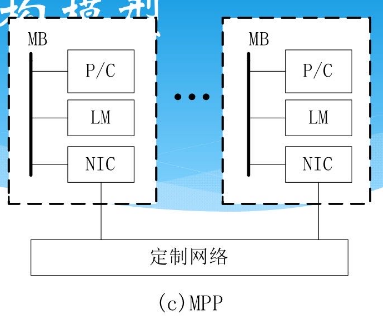
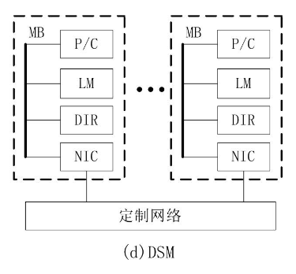
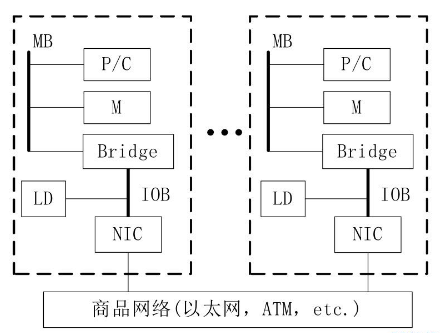

分布式笔记
BSP模型：https://blog.csdn.net/sydpz1987/article/details/51517851
均匀洗牌：左移一位
蝶式：最高位最低位互换
P41 并非所有网络之间可实现完美嵌入，例如一棵完全二叉树，除非其高度为2，否则无法将其完美嵌入到20D网孔中
P43 CPU板级上的总线称为本地总线… 交叉开关
级间连接方式ISC：均匀洗牌，蝶式，纵横交叉
https://blog.csdn.net/weixin_43934607/article/details/111680075

https://zhuanlan.zhihu.com/p/347217293
而无论是哪一种结构，都可能会出现数据共享的问题，即两个不同处理机的 Cache 存放了缓存了同一个主存单元的块，即共享数据，这种情况就可能会导致 Cache 一致性问题的出现。
2o
=============
动态互连网络权衡、比较性能：表格+
总线造价最低，单易冲突；交叉开关造价最高，但带宽和选路性能最好；多级互连网络是总线与交叉开关的折中，主要优点采用模块结构，可扩展性好，但延迟随网络尺寸对数增长
https://baike.baidu.com/item/CSMA%2FCD/986847
CSMA/CD（Carrier Sense Multiple Access with Collision Detection，载波侦听多路访问/冲突检测协议），早期主要是以太网络中数据传输方式，广泛应用于以太网中。
载波侦听（Carrier Sense），意思是网络上各个工作站在发送数据前，都要确认总线上有没有数据传输。若有数据传输（称总线为忙），则不发送数据；若无数据传输（称总线为空），立即发送准备好的数据。
多路访问（Multiple Access），意思是网络上所有工作站收发数据，共同使用同一条总线，且发送数据是广播式。
“冲突检测”是指发送结点在发出信息帧的同时，还必须监听媒体，判断是否发生冲突（同一时刻，有无其他结点也在发送信息帧）。
并行计算机结构模型：
1、并行向量计算机（PVP)
- 使用专门设计的高带宽的交叉开关网络将VP连向共享存储模块，存储器可以每秒兆字节的速度向处理器提供数据。这样的机器通常不使用高速缓存，而是使用大量的向量寄存器和指令缓冲器。
2、对称多处理器（SMP）
- SMP用微处理器（有片上或外置高速缓存），它们经由高速总线/交叉开关连向共享存储器。主要用于商务领域，如数据库、在线事务处理系统和数据仓库等。
- 系统对称，每个处理器可等同地访问共享存储器、I/O设备和操作系统服务。因为对称，所以能有较高并行度
- 由于共享存储，限制了系统中处理器不能太多，同时总线和交叉开关互连一旦做成也难于扩展。（不可扩放性）
3、大规模并行处理机（MPP）
- 特性：
- ① 处理节点用商品化的微处理器
- ② 系统中有物理上的分布式存储器
- ③ 采用高通信带宽和低延迟的互连网络（专门设计和定制的）
- ④ 能扩放至成百上千乃至上万个处理器
- ⑤ 异步的MIMD机器，程序由多个进程组成，每个都有私有地址空间，进程间用传递消息机制相互作用
- 主要应用于科学计算、工程模拟和信号处理等以计算为主的领域
4、分布共享存储处理机（DSM）
- 高速缓存目录（DIR）用以支持分布高速缓存的一致性
- DSM和SMP的主要差别是，DSM在物理上有分布在节点中的局存，从而形成了一个共享的存储器
- 对用户而言，系统硬件和软件提供了一个单地址的编程空间。DSP相对于MPP的优越性是编程较容易
5、工作站机群（COW）
- 特征：
- ① COW的每个节点都是一个完整的工作站（不包括监视器、键盘、鼠标等），这样的节点有时称为“无头工作站”，一个节点也可以是一台PC或SMP
- ② 各节点通过一种低成本的商品网络（如以太网、FDDI和ATM开关等）互连
- ③ 各节点内总是有本地磁盘，而MPP节点内却没有
- ④ 节点内网络接口是松散耦合到I/O总线上，而MPP内的网络接口是连到处理节点的存储总线上，是紧耦合的
- ⑤ 每个节点中驻留一个完整的操作系统，而MPP通常只是一个微核。COW的操作系统是工作站UNIX，加上一个附加的软件层，以支持单一系统映像、并行度、通信和负载平衡
COW VS MPP：3、4、5点+P79通信要求
PVP不使用高速缓存
SMP 有高速缓存 优点：对称-较高并行度 缺点：不可扩放性
COMA
优点：在本地共享存储器命中的概率较高
缺点：当处理器的访问不在本节点命中时，由于存储器的地址是活动的，需要一种机制来查找被访问单元的当前位置，因此延迟很大
NCC-NUMA
虽然每个处理器都有高速缓存，但硬件不负责维护高速缓存一致性。高速缓存一致性由编译器或程序员来维护。好处是系统可扩性强。
MPP设计问题
- 可扩放性
- 系统能扩展至成千上万个处理器，而存储器和I/O的容量亦能按比例地增加
- 要平衡处理能力与存储和I/O的能力
- 要平衡计算能力与交互能力
- 系统成本
- 要保证低成本，用商用CMOS微处理器
- 要采用相对稳定的结构，如可扩放并行机的Shell结构
- 要使用物理上分布的存储器结构，它比同规模机器的集中存储器结构要便宜
- 要采用SMP节点方式以削减互连规模
- 通用性和可用性
- 必须是一个通用系统，能支持不同的应用（技术和商业）
- 要支持流行的标准编程模式（如PVM、MPI）
- 诸节点应能按大、小作业要求进行不同的组合以支持交互和批处理模式
- 互连拓扑应对用户透明（（（
- 应在不同层次上支持单一系统映像（（（
- 必须使用高可用性技术（故障）
- 通信要求
- MPP和COW的关键差别是节点间的通信，COW使用标准的LAN，而MPP使用高速、专用高带宽、低延迟的互连网络，无疑在通信方面优于COW。然而通信技术的迅速发展，COW对MPP颇具威胁，从而MPP对通信技术也提出了更高的要求
- 存储器和I/O能力
- 因为MPP是可扩放系统，所以要求非常大的总计存储器和I/O设备容量，I/O方面较落后，需要提供一个可扩放的I/O子系统
https://www.docin.com/p-441896381.html
热备份：系统处于正常运转状态下的备份
冷备份：离线备份
保证高速缓存的一致性
- 监听总线协议：基于总线连接的多处理机系统
- 写无效：本地高速缓存的数据块更新时使所有远程副本均无效
- 写更新：把更新的数据块广播给含该数据块的所有高速缓存
- 基于目录的协议：多级互连网络连接的多处理机系统
- 使用一个目录来记录共享数据的所有高速缓存行的位置和状态
超线性加速
- 并行搜索算法：允许不同的处理器在不同的分支方向上同时搜索，当某一处理器一旦迅速地找到了解，它就向其余的处理器发出中止搜索的信号，这就会提前取消那些在串行算法中所作的无谓的搜索分支
- 绝大多数并行机中，每个处理器均有少量的高速缓存，当某一问题执行在大量的处理器上，而其大多的数据均放在高速缓存中，总的计算时间趋于减少，如果由于这种高速缓存效应所造成的计算时间下降补偿了由于通信等所造成的额外开销时间，则可能造成超线性加速现象
可扩放性定义与传统加速比定义的差别
- 加速比的定义是保持问题规模不变，而可扩放性定义是保持平均速度不变
- 加速比是标志并行处理相对于串行处理所获得性能增加；可扩放性是标志从小规模系统到大规模系统所引起的性能衰减
并行算法的一般设计过程
PCAM
- 划分：分解成小的任务，开拓并发性
- 通讯：确定诸任务间的数据交换，监测划分的合理性
- 组合：依据任务的局部性，组合成更大的任务
- 映射：将每个任务分配到处理器上，提高算法的性能
划分
- 域分解
- 功能分解
划分判据
- 划分是否具有灵活性
- 划分是否避免了冗余计算和存储
- 划分任务尺寸是否大致相当
- 任务数与问题尺寸是否成比例
- 功能分解是一种更深层次的分解，是否合理
四种通讯模式
- 局部/全局通讯（全局：All to All / Master-Worker 分治求和树）
- 结构化/非结构化通讯（结构化通讯 每个任务的通讯模式是相同的）
- 静态/动态通讯
- 同步/异步通讯
通迅判据
- 所有任务是否执行大致相当的通讯
- 是否尽可能的局部通讯
- 通讯操作是否能并行执行
- 同步任务的计算能否并行执行
组合：通过增加任务的粒度和重复计算，可以减少通讯成本
组合判据
- 增加粒度是否减少了通讯成本
- 重复计算是否已权衡了其得益
- 是否保持了灵活性和可扩放性
- 组合的任务数是否与问题尺寸成比例
- 是否保持了类似的计算和通讯
- 有没有减少并行执行的机会
开发映射的主要目的：减少算法的总的执行时间
- 把那些能够并发执行的任务放到不同的处理器上以增强并行度
- 把那些需频繁通信的任务置于同一个处理器上以提高局部性
负载平衡算法（域分解）
- 递归对剖（需全局知识，性能好但代价高）
- 局部算法（代价小，但当负载变化大时调整很慢）
- 概率方法（代价小，可扩放性好，但通信代价可能很大，且只适用于任务数远多于处理器数的情况）
- 循环映射（实际是概率映射的一种形式，而概率方法比其他技术更可能导致可观的通信）
当任务间很少有通信和/或通信模式很少呈局部性时，概率方法才可能是最有效
任务调度算法（功能分解）
- 经理/雇员模式
- 经理（中心任务）负责任务分配，每个雇员重复地从经理那里请求并执行具体任务
- 使用预取方法（以使计算和通信重叠）和缓存方法（使得雇员无任务时经理和雇员才通信）可以改善效率
- 非集中模式
- 无中心管理者的分布式调度法
- 每个处理器中均维持一个任务池，这些任务池实际上就变成了可供请求者异步访问的、分布的数据结构
任务调度算法需要一种机构来检测何时操作结束。这种检测机构在经理-雇员算法中容易实现，因为经理能容易地决定何时雇员们都空闲了；在非集中式算法中则较困难，因为没有一个中央机构来记录雇员空闲状况
映射判据
- 采用集中式负载平衡方案，是否存在通讯瓶颈
- 采用动态负载平衡方案，调度策略的成本如何
并行计算：并行机上所作的计算，又称高性能计算或超级计算
网络直径：网络中任何两个节点之间的最长距离，即最大路径数
对剖带宽：每秒钟内，在最小的对剖平面上通过所有连线的最大信息位（或字节）数
嵌入：将网络中各节点映射到另一个网络中去
膨胀系数
标准互联网络：Myrinet, 高性能并行接口Hippl, 光纤通道FC, FDDI, ATM
ATM：独立于介质的消息传输协议，基于报元交换机制，目的是将实时和突发数据的传输合并成单一的网络技术
蝶式通信结构
广播/收集/散射/全交换/循环移位
SIMD和MISD更适合专用计算
商用并行计算机中MIMD最常用（高性能服务器，超级计算机）
系统结构灵活
Gustafson：为了提高精度，必须加大计算量
划分：分解成小的任务，开拓并发性
并行算法的基本设计技术
- 划分设计技术
- 分治设计技术
- 双调归并网络
- 平衡树设计技术
- 倍增设计技术
- 表序问题
- 求森林的根
- 流水线设计技术
并行计算模型
- PRAM模型
- 异步APRAM模型
- BSP模型
- logP模型
任务粒度，如前所述，我们把Map拆分成了M个片段、把Reduce拆分成R个片段执行。理想情况下，M和R应当比集群中worker的机器数量要多得多。在每台worker机器都执行大量的不同任务能够提高集群的动态的负载均衡能力，并且能够加快故障恢复的速度：失效机器上执行的大量Map任务都可以分布到所有其他的worker机器上去执行。
表面-容积效应启发我们，在其他条件等同的情况下，高维分解一般更有效，因为相当于一个给定的容积（计算），它减少了表面积（通信）。因此从效率的角度看，增加粒度的最好办法是在所有的维上组合任务